Настройка MikroTik CAPsMAN v2 на hAP ac (2.4 ГГц и 5 ГГц)
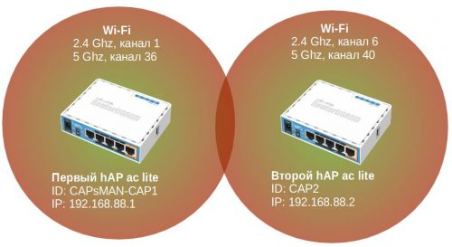
Упрощенная схема CAPsMAN сети
В данной статье я не буду глубоко погружаться в настройки Mikrotik, а акцентирую свою внимание на настройке CAPsMAN v2 и особенно на моментах которые мне были непонятны.
Статья рассчитана на начинающих пользователей, которые ещё не сталкивались с CAPsMAN. Она поможет сделать первые шаги в изучении данного продукта, понять архитектуру и принципы работы. В статье приведён один из вариантов настройки Wi-Fi сети на базе CAPsMAN, но на самом деле вариантов больше и под каждую конкретную задачу можно выбрать оптимальный вариант настройки.
MikroTik постоянно улучшает функционал CAPsMAN и с каждой новой версией ROS появляются новые возможности и настройки, так что, не удивляйтесь, если в процессе настройки CAPsMAN у вас будут отличаться параметры или появятся новые, которые не описаны в статье.
Статья постоянно обновляется и дополняется. В случае появления новых функций в CAPsMAN я вношу информацию о них в статью.
Используемое оборудование и ПО:
Оглавление [Скрыть]
Важно всегда использовать актуальную версию RouterOS ветки (channel) «bugfix» (для критически важных объектов, где в первую очередь важна стабильность работы) или ветки «current»!
ВНИМАНИЕ! Обновление Firmware!
После обновления RouterOS не забываем обновить и Firmware! Это очень важное замечание, т.к. если вы обновили RouterOS но не актуализировали Firmware, может быть множество непонятных глюков! Firmware, это что-то типа BIOS на компьютере, а RouterOS уже операционная система.
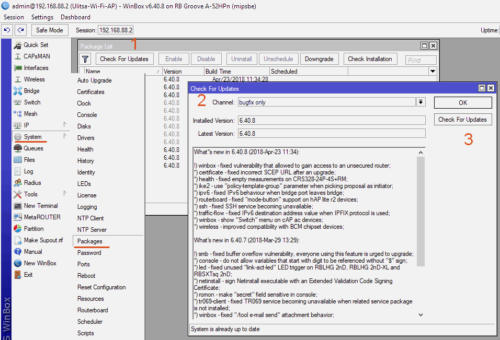
Меню System > Package. Мы увидим какая версия ROS установлена и какие используются пакеты.
Нажимаем Check For Updates (1), выбираем ветку с которой будем делать обновление (2) и нажимаем кнопку Check For Update (3).
Если у вас не актуальная версия RouterOS то появится информация с изменениями в новой версии (What’s new) и кнопка Download&Install, нажмите её.
Команды в консоли
/system package update set channel=bugfix /system package update check-for-updates channel: bugfix current-version: 6.40.8 latest-version: 6.40.8 status: System is already up to date /system package update download /system package update install
|
1 2 3 4 5 6 7 8 9 10 11 12 |
/system package update set channel=bugfix /system package update check-for-updates status: System is already up to date /system package update download |
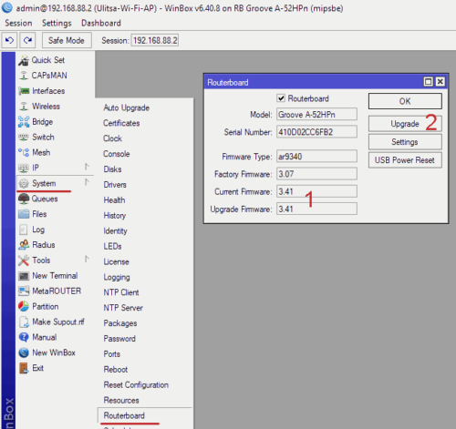
Обновление firmware Mikrotik
Меню System > Routerboard. Далее смотрим, если у вас отличаются версии Current firmware и Upgrade firmware (1), тогда нажимаем кнопку Upgrade (2) и перезагружаем роутер (меню System > Reboot).
Команды в консоли
/system routerboard print routerboard: yes model: Groove A-52HPn serial-number: 410D02BC6FB2 firmware-type: ar9340 factory-firmware: 3.07 current-firmware: 3.41 upgrade-firmware: 3.41 /system routerboard upgrade /system reboot
|
1 2 3 4 5 6 7 8 9 10 11 12 13 14 |
Первый hAP ac lite в роли CAPsMAN v2 и Wi-Fi AP
На время настройки отключите все правила Firewall на MikroTik с CAPsMAN!
Из-за некорректной настройки Firewall (цепочка input) могут быть проблемы с подключением локального CAP к CAPsMAN.
Настройте CAPsMAN, проверите что всё работает, а дальше корректно настроите Firewall.
Проблема появляется в случае, если у вас присутствует правило запрещающее (drop) весь входящий трафик (цепочка input). Даже если у вас разрешен входящий трафик из локальной сети, этого недостаточно.
Пример:
/ip firewall filter ... add chain=input action=drop in-interface=!bridge1
|
1 2 3 4 5 |
Подробнее о проблеме и решение:
Если у вас локальный CAP (который находится на самом CAPsMAN) не подключается к CAPsMAN, но подключается при отключении Firewall, то можете сделать ниже приведенные рекомендации с использованием IP адреса loopback.
1. В настройке CAP укажите адрес CAPsMAN: 127.0.0.1 /interface wireless cap set caps-man-addresses=127.0.0.1 2. Добавьте правила в Firewall (данные правила должны быть в самом верху). Разрешаем хождение траифка от локального CAP к CAPsMAN. /ip firewall filter add chain=output action=accept protocol=udp src-address=127.0.0.1 dst-address=127.0.0.1 port=5246,5247 /ip firewall filter add chain=input action=accept protocol=udp src-address=127.0.0.1 dst-address=127.0.0.1 port=5246,5247
Ссылки на подробную информацию:
Вернитесь к этой заметке если сталнётесь с этой проблемой.
Настройка идентификатора MikroTik’а
Прописываем идентификатор MikroTik’а, что бы в дальнейшем было проще ориентироваться.
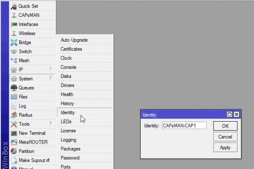
Команды в консоли
/system identity set name=CAPsMAN-CAP1
|
1 2 3 4 |
Создаем bridge, добавляем в него интерфейсы (все кроме Wi-Fi) и присваиваем IP адрес. Wi-Fi интерфейсы сами добавятся в нужный бридж.
Акцентировать на этом внимание не буду, всё стандартно.
Во время настройки бриджа и добавления в него портов может отвалится WinBox. Просто переподключитесь.
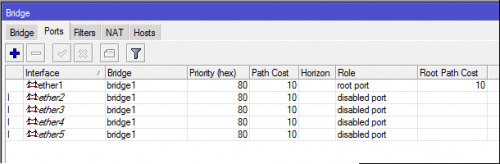 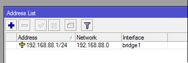
Команды в консоли
/interface bridge port add bridge=bridge1 interface=ether1 add bridge=bridge1 interface=ether2 add bridge=bridge1 interface=ether3 add bridge=bridge1 interface=ether4 add bridge=bridge1 interface=ether5 /ip address add address=192.168.88.1/24 interface=bridge1 network=192.168.88.0
Не добавляйте в bridge Wi-Fi интерфейсы. CAPsMAN, в зависимости от настроек Local Forwarding в Datapath, сам добавит или нет Wi-Fi интерфейсы в bridge.
Если вы вручную добавите Wi-Fi в bridge, могут быть проблемы и сообщения в логах:
bridge port received packet with own address as source address (4f:5e:0d:15:60:6s), probably loop
Настройка CAPsMAN на hAP ac lite
Иерархическая структура настроек CAPsMAN
Что бы было проще ориентироваться в приведенных настройках CAPsMAN, опишу иерархию настроек.
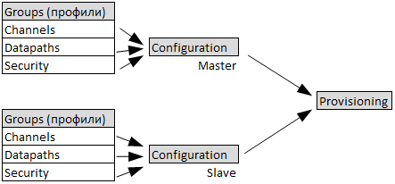
Все настройки Wireless интерфейсов объединяются в Groups (профили настроек), Groups привязываются к Configuration, а уже Configuration ассоциируется с Provisioning.
Provisioning это правила настройки CAP’ов. Когда CAP подключается с CAPsMAN он подгружает (динамически или статически) свой Provisioning и с помощью него получает все необходимые настройки.
Configuration могут быть Master и Slave. Master это основная конфигурация, Slave дополнительная, например для гостевой сети.
Groups (профили настроек) в CAPsMAN:
Groups, Configuration и Provisioning может быть множество для разных задач.
В нашем случае, будет созданы две Master Configuration для 2.4 Ghz и 5 Ghz диапазонов и два Provisioning для CAP с двумя радиокартами 2.4 Ghz и 5 Ghz. Slave конфигурация не используется.
Подробнее: CAPsMAN Configuration Concepts
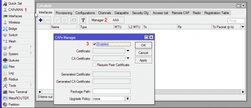
Выбираем меню CAPsMAN (1), нажимаем кнопку Manager (2) и включаем CAPsMAN (3).
Таблица распределения 2.4 Ghz частот и каналов
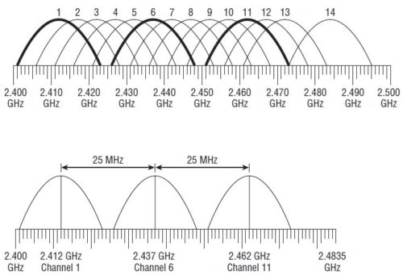
Wi-Fi 2.4 ГГц. Схема распределения каналов
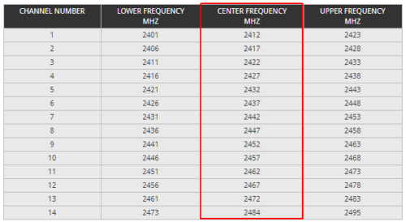
Wi-Fi 2.4 ГГц. Таблица распределения частот
Используйте частоты разрешённые в вашем регионе!
Настройка Channel для 2.4 Ghz (20 Mhz)
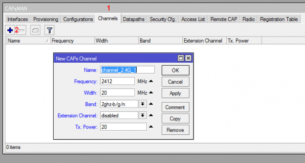
Выбираем закладку Channel (1) добавляем канал (2).
Указываем имя группы каналов, частоту, ширину канала (20 Mhz), поддерживаемые стандарты 802.11 (b/g/n), мощность (20).
Мы создали первый канал (канал 1) для первого CAP’а, теперь нам необходимо создать второй не пересекающийся канал (канал 6) для второго CAP’а.
Настраиваем его аналогичным образом.
Результат будет таким:
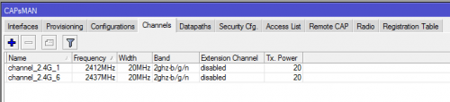
Таблица распределения 5 Ghz частот и каналов
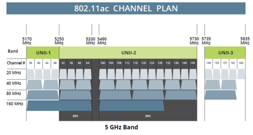
Wi-Fi 5 ГГц. Схема распределения каналов
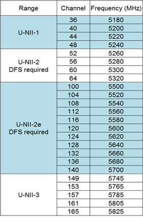
Wi-Fi 5 ГГц. Таблица распределения частот
Используйте частоты разрешённые в вашем регионе!
Настройка Channel для 5 Ghz (40 Mhz)
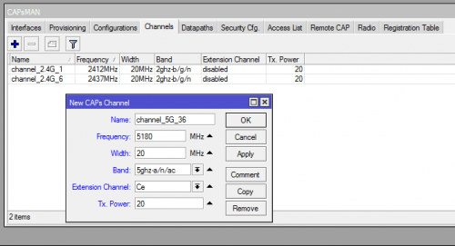
Настройки аналогичны настройкам для 2.4 Ghz. Добавляем канал 36 (5180 Mhz) и потом канал 44 (5220 Mhz).
Обратите внимание как устанавливается ширина канала. Эта настройка весьма не очевидна. Если нам нужно 40 Mhz, то мы в Width ставим 20, а в Extension Channel указываем куда будем расширять канал. Выше (Ce) или ниже по каналам (eC).
Если вам нужно 80 Mhz то будет Ceee или eeeC, а в Width всё те же 20 и т.д. Подробно данная тема обсуждалась на форуме MikroTik тут и тут.
Результат будет таким:
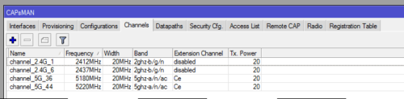
Если у вас не стоит задача вручную разносить CAP’ы на непересекающиеся каналы, то можно создать только по одному Channel для 2.4 Ghz и 5 Ghz, а поле Frequency оставить пустым. Тогда CAPsMAN будет сам, автоматически, распределять между CAP’ами частотные каналы. Но я считаю, что лучше вручную распределить каналы. Выбор за вами. Ниже я опишу процесс присваивания индивидуального канала для каждого CAP’а.
Настраиваем как будет ходить трафик от Wi-Fi клиентов.
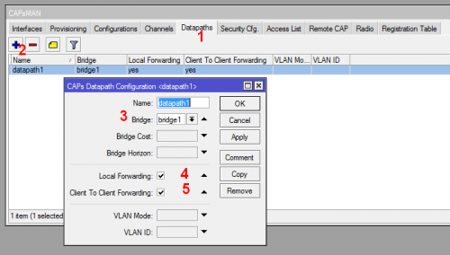
Выбираем закладку Datapaths (1), добавляем новый (2), выбираем ранее созданный Bridge (3) и устанавливаем Local Forwarding (3) и Client To Client Forwarding (4).
Client To Client Forwarding — разрешаем или нет Wi-Fi клиентам видеть друг-друга в рамках одного радиомодуля (радиоинтерфейса).
Local Forwarding — если включён Local Forwarding, то Wi-Fi интерфейс добавится в локальный бридж конкретной CAP и трафик от Wi-Fi клиентов подключённых к данной CAP будет терминироваться локально. Если Local Forwarding выключен, то организуется что-то типа туннеля от CAP до CAPsMAN и Wi-Fi интерфейсы CAP’ов добавятся в бридж CAPsMAN’а и весь трафик со всех CAP’ов пойдёт централизованно через CAPsMAN. (Заметка: MikroTik CAPsMAN и Local Forwarding, обновление от 04/05/2017 )
Пример, когда выключен Local Forwarding и все CAP’ы динамически добавлены в bridge CAPsMAN’а:
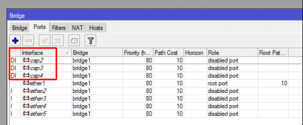
Всё стандартно и понятно, останавливаться подробно не буду.
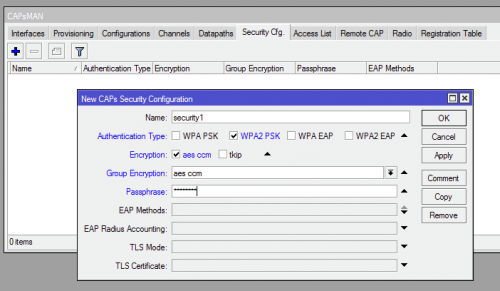
CAPsMAN log: disconnected, group key timeout
Некоторые Wi-Fi клиенты отключаются от точки доступа примерно раз в 5 минут и в этот момент в логе MikroTik появляется запись:
caps,info 28:FF:4E:BD:CA:4F@cap3 disconnected, group key timeout
Необходимо увеличить параметра group-key-update (как часто, точка доступа обновляет и передаёт клиентам новый групповой ключ). Данный параметр появился с версии ROS 6.38 и ещё не описан в wiki по CAPsMAN.
В случае возникновения подобных проблемы установите параметр group-key-update равный одному часу.
Пример:
/caps-man security set security1 group-key-update=1h
|
1 2 3 |
В WinBox данного параметра ещё нет, настроить можно только через консоль.
Создание Configuration для 5 Ghz
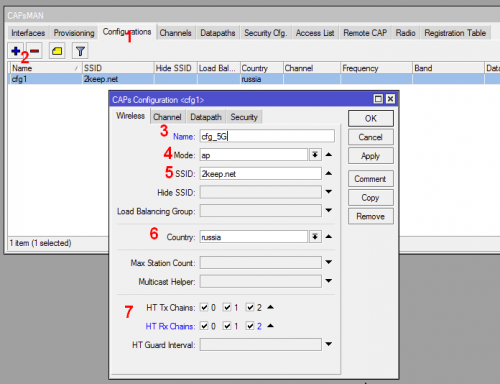
В закладке Configurations (1) добавляем конфигурацию (2) для 5 Ghz диапазона.
Задаём имя конфигурации (3), режим работы Wi-Fi радио карты (4), SSID (5), страну (6) и антенны (7).
В закладках Channel, Datapath и Security выбираем выше созданные Groups (профили настроек).
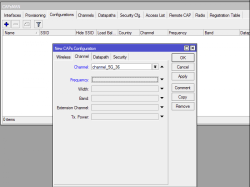
По умолчанию, все новые CAP’ы динамически подключенные к CAPsMAN будут использовать канал 36. В дальнейшем мы сможем задать свой собственный канал для каждой CAP.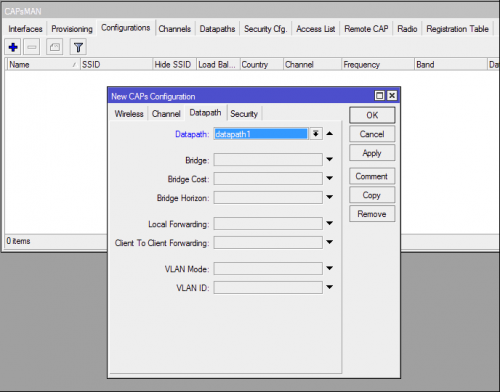 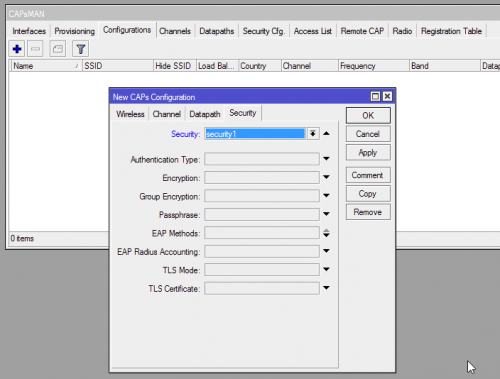
Создание Configuration для 2.4 Ghz
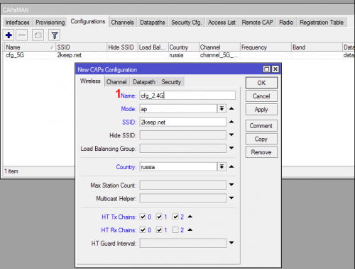Настройки аналогичны настройкам для 5 Ghz, задаём только своё имя конфигурации (1).
В закладках Channel, Datapath и Security выбираем выше созданные Groups (профили настроек).
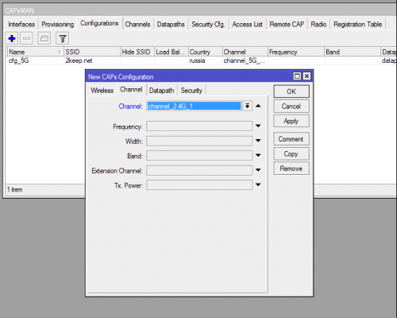По умолчанию, все новые CAP’ы динамически подключенные к CAPsMAN будут использовать канал 1. В дальнейшем мы сможем задать свой собственный канал для каждой CAP. 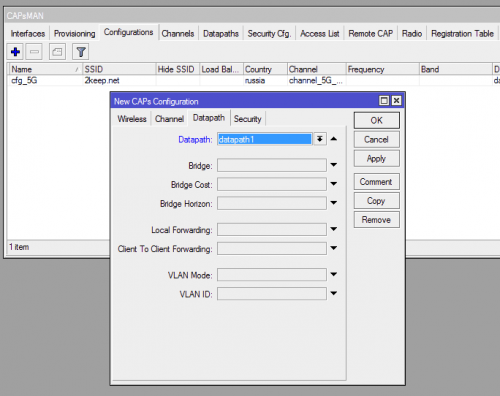 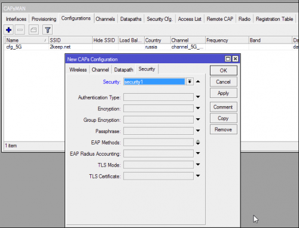В результате мы получим две конфигурации для 2.4 и 5 Ghz диапазонов.
Возможности Provisioning весьма широкие, в данном примере показан один из простых примеров — всем CAP присваивать одинаковую конфигурацию на основе их аппаратных возможностей (используемых радиомодулей).
Но можно создавать более сложные правила Provisioning’а, например:
И так, мы создали группы с настройками для каналов (Channel), безопасности (Security), группы с правилами хождения трафика (Datapath) и объединили эти группы в конфигурации (Configuration) для двух диапазонов 2.4 Ghz и 5 Ghz.
Теперь необходимо создать правила настройки CAP’ов (Provisioning). Каким CAP’ам, какие конфигурации будут присваиваться (конфигураций может быть много с разными настройками).
Делается это с помощью Provisioning.
Для того, что бы одному устройству с двумя радиомодулями (2 ГГц и 5 ГГц) присвоить конфигурацию для двух диапазонов, нужно создать два раздельных Provisioning. Каждый провижининг привязывается к MAC адресу нужного радиомодуля (2 и 5 ГГЦ).
Создадим два Provisioning для 2.4 и 5 Ghz диапазонов.
Provisioning для MikroTik с 5Ghz радиокартами
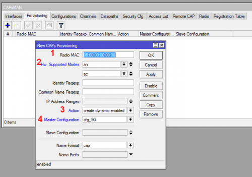
Provisioning для MikroTik с 2.4 Ghz радиокартами
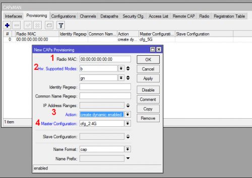
В результате мы получим следующий список Provisioning:
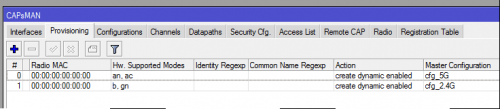
Команды в консоли
/caps-man manager set enabled=yes /caps-man channel add band=2ghz-b/g/n extension-channel=disabled frequency=2412 name=\ channel_2.4G_1 tx-power=20 width=20 add band=2ghz-b/g/n extension-channel=disabled frequency=2437 name=\ channel_2.4G_6 tx-power=20 width=20 add band=5ghz-a/n/ac extension-channel=Ce frequency=5180 name=channel_5G_36 \ tx-power=20 width=20 add band=5ghz-a/n/ac extension-channel=Ce frequency=5220 name=channel_5G_44 \ tx-power=20 width=20 /caps-man datapath add bridge=bridge1 client-to-client-forwarding=yes local-forwarding=yes name=\ datapath1 /caps-man security add authentication-types=wpa2-psk encryption=aes-ccm group-encryption=aes-ccm \ name=security1 passphrase=12345678 /caps-man configuration add channel=channel_5G_36 country=russia datapath=datapath1 mode=ap name=\ cfg_5G rx-chains=0,1,2 security=security1 ssid=2keep.net tx-chains=0,1,2 add channel=channel_2.4G_1 country=russia datapath=datapath1 mode=ap name=\ cfg_2.4G rx-chains=0,1 security=security1 ssid=2keep.net tx-chains=0,1,2 /caps-man provisioning add action=create-dynamic-enabled hw-supported-modes=an,ac \ master-configuration=cfg_5G add action=create-dynamic-enabled hw-supported-modes=b,gn \ master-configuration=cfg_2.4G
На этом, базовые настройки CAPsMAN закончены.
Настройка локальных Wireless интерфейсов для работы с CAPsMAN
Мы настроили CAPsMAN на первом hAP ac lite, теперь настроим на нём Wireless интерфейс (локальный CAP), которая будет под контролем CAPsMAN.
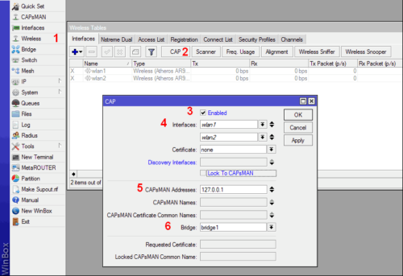
Команды в консоли
/interface wireless cap set bridge=bridge1 caps-man-addresses=127.0.0.1 enabled=yes interfaces=\ wlan1,wlan2
|
1 2 3 4 5 |
set bridge=bridge1 caps-man-addresses=127.0.0.1 enabled=yes interfaces=\ |
В результате мы видим, что Wireless интерфейсы wlan1 и wlan2 находятся под управлением CAPsMAN.
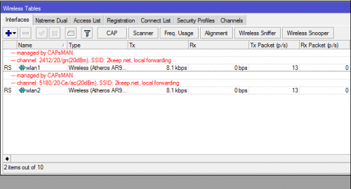
Полный конфиг первого hAP ac lite (CAPsMAN-CAP1)
/caps-man channel add band=2ghz-b/g/n extension-channel=disabled frequency=2412 name=\ channel_2.4G_1 tx-power=20 width=20 add band=2ghz-b/g/n extension-channel=disabled frequency=2437 name=\ channel_2.4G_6 tx-power=20 width=20 add band=5ghz-a/n/ac extension-channel=Ce frequency=5180 name=channel_5G_36 \ tx-power=20 width=20 add band=5ghz-a/n/ac extension-channel=Ce frequency=5220 name=channel_5G_44 \ tx-power=20 width=20 /interface bridge add name=bridge1 /interface wireless # managed by CAPsMAN # channel: 2412/20/gn(20dBm), SSID: 2keep.net, local forwarding set [ find default-name=wlan1 ] disabled=no # managed by CAPsMAN # channel: 5180/20-Ce/ac(20dBm), SSID: 2keep.net, local forwarding set [ find default-name=wlan2 ] disabled=no /caps-man datapath add bridge=bridge1 client-to-client-forwarding=yes local-forwarding=yes name=\ datapath1 /caps-man security add authentication-types=wpa2-psk encryption=aes-ccm group-encryption=aes-ccm \ name=security1 passphrase=12345678 /caps-man configuration add channel=channel_5G_36 country=russia datapath=datapath1 mode=ap name=\ cfg_5G rx-chains=0,1,2 security=security1 ssid=2keep.net tx-chains=0,1,2 add channel=channel_2.4G_1 country=russia datapath=datapath1 mode=ap name=\ cfg_2.4G rx-chains=0,1 security=security1 ssid=2keep.net tx-chains=0,1,2 /interface wireless security-profiles set [ find default=yes ] supplicant-identity=MikroTik /caps-man manager set enabled=yes /caps-man provisioning add action=create-dynamic-enabled hw-supported-modes=an,ac \ master-configuration=cfg_5G add action=create-dynamic-enabled hw-supported-modes=b,gn \ master-configuration=cfg_2.4G /interface bridge port add bridge=bridge1 interface=ether1 add bridge=bridge1 interface=ether2 add bridge=bridge1 interface=ether3 add bridge=bridge1 interface=ether4 add bridge=bridge1 interface=ether5 /interface wireless cap set bridge=bridge1 caps-man-addresses=192.168.88.1 enabled=yes interfaces=\ wlan1,wlan2 /ip address add address=192.168.88.1/24 interface=bridge1 network=192.168.88.0 /system identity set name=CAPsMAN-CAP1 /system routerboard settings set cpu-frequency=650MHz init-delay=0s protected-routerboot=disabled
Второй hAP ac lite в роли Wi-Fi AP под управленим CAPsMAN
Настройка идентификатора MikroTik’а
Прописываем идентификатор MikroTik’а, что бы в дальнейшем было проще ориентироваться.
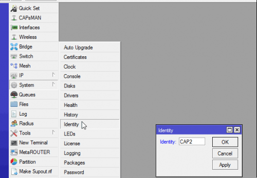
Команды в консоли
/system identity set name=CAP2
|
1 2 3 4 |
Как и для CAPsMAN создаем бридж.
Создаем bridge, добавляем в него интерфейсы (все кроме Wi-Fi) и присваиваем IP адрес.
Wi-Fi интерфейсы сами добавятся в нужный бридж.
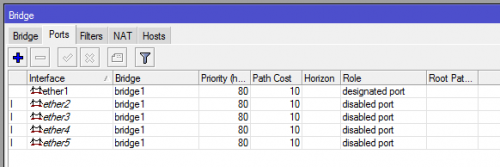 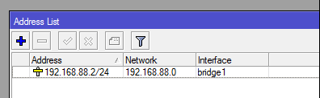
Команды в консоли
/interface bridge port add bridge=bridge1 interface=ether1 add bridge=bridge1 interface=ether2 add bridge=bridge1 interface=ether3 add bridge=bridge1 interface=ether4 add bridge=bridge1 interface=ether5 /ip address add address=192.168.88.2/24 interface=bridge1 network=192.168.88.0
Настройка Wireless интерфейсов для работы с CAPsMAN
Настройки Wireless интерфейсов для работы с CAPsMAN, точно такие же, как и для CAP1.
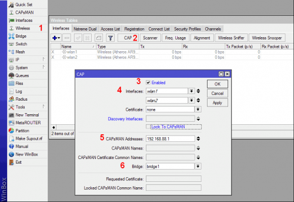
Команды в консоли
/interface wireless cap set bridge=bridge1 caps-man-addresses=192.168.88.1 enabled=yes interfaces=\ wlan1,wlan2
|
1 2 3 4 5 |
set bridge=bridge1 caps-man-addresses=192.168.88.1 enabled=yes interfaces=\ |
В результате мы видим, что Wireless интерфейсы wlan1 и wlan2 находятся под управлением CAPsMAN.
Полный конфиг второго hAP ac lite (CAP2)
/interface bridge add name=bridge1 /interface wireless # managed by CAPsMAN # channel: 2412/20/gn(20dBm), SSID: 2keep.net, local forwarding set [ find default-name=wlan1 ] disabled=no ssid=MikroTik # managed by CAPsMAN # channel: 5180/20-Ce/ac(20dBm), SSID: 2keep.net, local forwarding set [ find default-name=wlan2 ] disabled=no ssid=MikroTik /interface wireless security-profiles set [ find default=yes ] supplicant-identity=MikroTik /interface bridge port add bridge=bridge1 interface=ether1 add bridge=bridge1 interface=ether2 add bridge=bridge1 interface=ether3 add bridge=bridge1 interface=ether4 add bridge=bridge1 interface=ether5 /interface wireless cap set bridge=bridge1 caps-man-addresses=192.168.88.1 enabled=yes interfaces=\ wlan1,wlan2 /ip address add address=192.168.88.2/24 interface=bridge1 network=192.168.88.0 /system identity set name=CAP2 /system routerboard settings set cpu-frequency=650MHz init-delay=0s protected-routerboot=disabled
На этом настройки второго hAP ac lite закончены, и Wi-Fi сеть должна работать, но правда на одном канале. Нас это не устраивает. Продолжаем дальше…
Настройка индивидуальных частотных каналов для CAP
Мы настроили CAPsMAN и две Wi-Fi точки доступа (CAP1 — находится на том же hAP что и CAPsMAN и CAP2 — на втором hAP’е). Если вы всё правильно настроили, то они подключились к CAPsMAN.
Открываем CAPsMAN на закладке Interfaces и видим 4 динамически (буква D (1)) созданных интерфейса (у нас два CAP’а и каждый с двумя радиоинтерфесами).
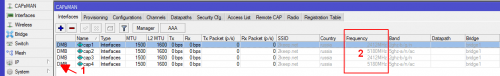
Описание букв в левой колонке
M - master D - dynamic B - bound X - disabled I - inactive R - running
|
1 2 3 4 5 6 7 8 |
Wi-Fi сеть уже работает, но все CAP’ы находятся на одном канале (2), а нам нужны разные.
Применить индивидуальные конфигурации для CAP (а частотный канал, это один из параметров конфигурации), можно как в статическом режиме, так и в динамическом.
Статическое распределение персональных частотных каналов (конфигураций)
Сейчас CAP’ы прописаны в CAPsMAN динамически (автоматически) и соответственно каналы прописались те, что мы указали ранее в конфигурации (groups channel).
В данный момент все CAP’ы подключены к CAPsMAN динамически (буква D) и в связи с этим на них нельзя менять параметры. Параметры можно менять только на статически привязных CAP’ах к CAPsMAN.
Открываем свойства интерфейса cap1 (он у нас на 2.4Ghz на CAP1), нажимаем Copy (1) и в окне параметров нового интерфейса, производим необходимые настройки. Дадим более понятное имя интерфейсу (2) и частоту канала (3).
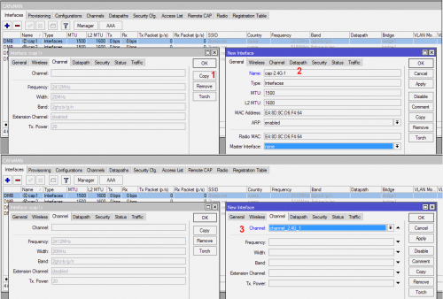
Теперь выбираем cap2 интерфейс (он у нас на 5Ghz на CAP1). Так же указываем имя и канал.
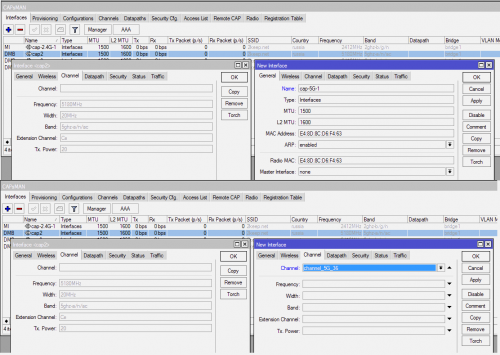Повторяем такие же манипуляции для CAP2 (соответственно выбираем другие частотные каналы).
В результате видим следующее:
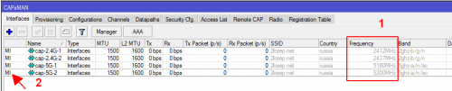У каждой CAP свой канал для 2.4Ghz и для 5Ghz (1), но интерфейсы неактивны (буква I) (2).
Изменения в новых настройках интерфейсов CAP’ов мы сделали, теперь нужно присвоить новые конфигурацию CAP’ам.
Заходим в закладку Remote CAP (1), выбираем первый CAP (2) и нажимаем кнопку Provision (3).
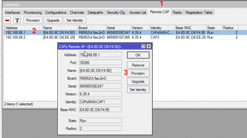Повторяем такие же манипуляции для CAP2.
Команды в консоли
Создам статические интерфейсы (функции Copy как в Winbox, я не нашел, будем прописывать вручную). /caps-man interface add arp=enabled channel=channel_2.4G_1 configuration=cfg_2.4G disabled=no \ l2mtu=1600 mac-address=E4:8D:8C:D6:F4:64 master-interface=none mtu=1500 \ name=cap-2.4G-1 radio-mac=E4:8D:8C:D6:F4:64 add arp=enabled channel=channel_2.4G_6 configuration=cfg_2.4G disabled=no \ l2mtu=1600 mac-address=E4:8D:8C:D6:EE:2F master-interface=none mtu=1500 \ name=cap-2.4G-2 radio-mac=E4:8D:8C:D6:EE:2F add arp=enabled channel=channel_5G_36 configuration=cfg_5G disabled=no l2mtu=\ 1600 mac-address=E4:8D:8C:D6:F4:63 master-interface=none mtu=1500 name=\ cap-5G-1 radio-mac=E4:8D:8C:D6:F4:63 add arp=enabled channel=channel_5G_44 configuration=cfg_5G disabled=no l2mtu=\ 1600 mac-address=E4:8D:8C:D6:EE:2E master-interface=none mtu=1500 name=\ cap-5G-2 radio-mac=E4:8D:8C:D6:EE:2E Присваиваем конфигурацию CAP'ам (Provision) [admin@CAPsMAN-CAP1] > /caps-man remote-cap print # ADDRESS NAME STATE RADIOS 0 192.168.88.1/35280 [E4:8D:8C:D6:F4:5E] Run 2 1 192.168.88.2/45776 [E4:8D:8C:D6:EE:29] Run 2 [admin@CAPsMAN-CAP1] > /caps-man remote-cap provision numbers=0 [admin@CAPsMAN-CAP1] > /caps-man remote-cap provision numbers=1
В результате мы видим, что все интерфейсы привязались к своим CAP (буква B) и у каждой CAP свой канал (частота).
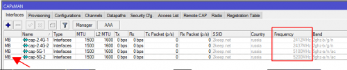
Полный конфиг первого hAP ac lite (CAPsMAN-CAP1) со статической привязкой CAP
/caps-man channel add band=2ghz-b/g/n extension-channel=disabled frequency=2412 name=\ channel_2.4G_1 tx-power=20 width=20 add band=2ghz-b/g/n extension-channel=disabled frequency=2437 name=\ channel_2.4G_6 tx-power=20 width=20 add band=5ghz-a/n/ac extension-channel=Ce frequency=5180 name=channel_5G_36 \ tx-power=20 width=20 add band=5ghz-a/n/ac extension-channel=Ce frequency=5220 name=channel_5G_44 \ tx-power=20 width=20 /interface bridge add name=bridge1 /interface wireless # managed by CAPsMAN # channel: 2412/20/gn(20dBm), SSID: 2keep.net, local forwarding set [ find default-name=wlan1 ] disabled=no ssid=MikroTik # managed by CAPsMAN # channel: 5180/20-Ce/ac(20dBm), SSID: 2keep.net, local forwarding set [ find default-name=wlan2 ] disabled=no ssid=MikroTik /caps-man datapath add bridge=bridge1 client-to-client-forwarding=yes local-forwarding=yes name=\ datapath1 /caps-man security add authentication-types=wpa2-psk encryption=aes-ccm group-encryption=aes-ccm \ name=security1 passphrase=12345678 /caps-man configuration add channel=channel_5G_36 country=russia datapath=datapath1 mode=ap name=\ cfg_5G rx-chains=0,1,2 security=security1 ssid=2keep.net tx-chains=0,1,2 add channel=channel_2.4G_1 country=russia datapath=datapath1 mode=ap name=\ cfg_2.4G rx-chains=0,1 security=security1 ssid=2keep.net tx-chains=0,1,2 /caps-man interface add arp=enabled channel=channel_2.4G_1 configuration=cfg_2.4G disabled=no \ l2mtu=1600 mac-address=E4:8D:8C:D6:F4:64 master-interface=none mtu=1500 \ name=cap-2.4G-1 radio-mac=E4:8D:8C:D6:F4:64 add arp=enabled channel=channel_2.4G_6 configuration=cfg_2.4G disabled=no \ l2mtu=1600 mac-address=E4:8D:8C:D6:EE:2F master-interface=none mtu=1500 \ name=cap-2.4G-2 radio-mac=E4:8D:8C:D6:EE:2F add arp=enabled channel=channel_5G_36 configuration=cfg_5G disabled=no l2mtu=\ 1600 mac-address=E4:8D:8C:D6:F4:63 master-interface=none mtu=1500 name=\ cap-5G-1 radio-mac=E4:8D:8C:D6:F4:63 add arp=enabled channel=channel_5G_44 configuration=cfg_5G disabled=no l2mtu=\ 1600 mac-address=E4:8D:8C:D6:EE:2E master-interface=none mtu=1500 name=\ cap-5G-2 radio-mac=E4:8D:8C:D6:EE:2E /interface wireless security-profiles set [ find default=yes ] supplicant-identity=MikroTik /caps-man access-list add action=accept disabled=no interface=all signal-range=-79..120 \ ssid-regexp="" add action=reject disabled=no interface=all signal-range=-120..-80 \ ssid-regexp="" /caps-man manager set enabled=yes /caps-man provisioning add action=create-dynamic-enabled hw-supported-modes=an,ac \ master-configuration=cfg_5G add action=create-dynamic-enabled hw-supported-modes=b,gn \ master-configuration=cfg_2.4G /interface bridge port add bridge=bridge1 interface=ether1 add bridge=bridge1 interface=ether2 add bridge=bridge1 interface=ether3 add bridge=bridge1 interface=ether4 add bridge=bridge1 interface=ether5 /interface wireless cap set bridge=bridge1 caps-man-addresses=192.168.88.1 enabled=yes interfaces=\ wlan1,wlan2 /ip address add address=192.168.88.1/24 interface=bridge1 network=192.168.88.0 /system identity set name=CAPsMAN-CAP1 /system routerboard settings set cpu-frequency=650MHz init-delay=0s protected-routerboot=disabled
Динамическое распределение персональных частотных каналов (конфигураций)
При больших инсталляциях, будет удобней использовать персональные правила динамического провижининга для каждой CAP на основе MAC адреса радиомодуля CAP.
Т.е. есть у нас 50 CAP’ов, то создаём для них 100 персональных правил провижининга (одно правило для 2.4ГГц, второе для 5ГГц, в сумме 100 правил).
Пример создания правила:
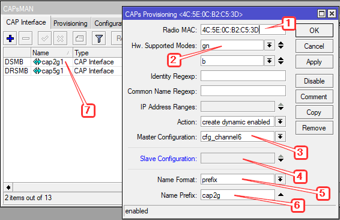
Создание правила Provisioning
Команды в консоли
/caps-man provisioning add action=create-dynamic-enabled hw-supported-modes=gn,b master-configuration=cfg_channel6 name-format=prefix name-prefix=cap2g radio-mac=4C:5E:0C:B2:C5:3D Результат Текущие радиоинтерфейсы: [admin@CAPsMAN-CAP1] > /caps-man interface print detail Flags: M - master, D - dynamic, B - bound, X - disabled, I - inactive, R - running 0 MDB name="cap2g1" mac-address=4C:5E:0C:B2:C5:3D arp-timeout=auto radio-mac=4C:5E:0C:B2:C5:3D master-interface=none configuration=cfg_channel6 l2mtu=1600 current-state="running-ap" current-channel="2437/20-Ce/gn(20dBm)" current-rate-set="CCK:1-11 OFDM:6-54 BW:1x-2x SGI:1x-2x HT:0-15" current-basic-rate-set="OFDM:6 BW:1x HT:0-7" current-registered-clients=0 current-authorized-clients=0 Текущие активные конфигурации: [admin@CAPsMAN-CAP1] > /caps-man actual-interface-configuration print Flags: M - master, D - dynamic, B - bound, X - disabled, I - inactive, R - running 0 MDB name="cap2g1" mac-address=4C:5E:0C:B2:C5:3D arp-timeout=auto radio-mac=4C:5E:0C:B2:C5:3D master-interface=none configuration.mode=ap configuration.ssid="2keep.net" configuration.tx-chains=0,1,2 configuration.rx-chains=0,1,2 configuration.country=russia2 configuration.distance=indoors security.authentication-types=wpa2-psk security.encryption=aes-ccm security.group-encryption=aes-ccm security.passphrase="youPSK" l2mtu=1600 datapath.client-to-client-forwarding=yes datapath.bridge=bridge1 datapath.local-forwarding=no channel.frequency=2437 channel.control-channel-width=20mhz channel.band=2ghz-onlyn channel.tx-power=20
Настройки закончены, можно подключаться к сети.
Используя такую же методику, можно изменять любые параметры на конкретных CAP’ах. Например, у всех CAP’ов в сети ширина канала 40 Mhz, но для одного CAP’а нам нужно сделать 20 Mhz.
В CAPsMAN закладке Registration Table, можно посмотреть какие пользователи, с какими параметрами и к какому интерфейсу подключены.
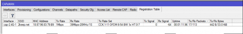
Команды в консоли
[admin@CAPsMAN-CAP1] > /caps-man registration-table print # INTERFACE SSID MAC-ADDRESS UPTIME RX-SIGNAL 0 cap-2.4G-1 2keep.net 18:87:96:83:79:B9 4s810ms -56 [admin@CAPsMAN-CAP1] > /caps-man registration-table print detail 0 interface=cap-2.4G-1 ssid="2keep.net" mac-address=18:87:96:83:79:B9 tx-rate-set="CCK:1-11 OFDM:6-54 BW:1x HT:0-7"
Статья: Расшифровка поля «Tx Rate Set» в меню «CAPsMAN > Registration Table»
Бесшовный роуминг Wi-Fi (handover)
Замечание на тему Wi-Fi роуминага:
Переход от одной AP к другой AP (роуминг) — прерогатива самого клиента. Именно клиент принимает решение, когда ему переходить с одной точки на другую и нужно ли вообще переходить. На разных Wi-Fi клиентах, данный процесс может быть по разному реализован или не реализован вообще.
Стандарты 802.11r/k/v предоставляют клиенту только информацию помогающую в роуминге, они не заставляют клиента выполнить процедуру роуминга. Как клиент поступит с этой информацией, остаётся на совести клиента.
В MikroTik нет поддержки протоколов роуминга (802.11r/k/v, OKC и др.). Так же, как их нет и у конкурента в своём ценовом диапазоне — Ubiquiti. В своё время, Ubiquiti разрабатывала свой протокол роуминга — Zero Handoff, но сейчас отказалась от него в новых версиях AP AC Gen2 (не оправдал ожидания и только создавал новые проблемы), а на старых AP не рекомендует его использовать:
«First, the ‘ZH’ feature isn’t not recommended in the vast majority of deployments…»
Ubiquiti в новых AP AC Gen2 не планирует реализовывать ZHO, а сосредоточится на 802.11r :
Re: Zero Handoff: Support for UAP-AC-PRO?
Options
02-18-2016 09:41 AM
@esseph is right. Currently there are no plans for ZHO on gen2 AC products. The focus will be 802.11r/v/k.
Cheers,
Mike https://community.ubnt.com/t5/UniFi-Wireless-Beta/Zero-Handoff-Support-for-UAP-AC-PRO/m-p/1486351#M23046
Но вернёмся к Mikrotik. На форуме Mikrotik я встречал упоминание, что они тоже работают над 802.11r, но точных ссылок на эту информацию не дам. Может в RouterOS 7 что-то и появится, посмотрим.
802.11r в сети из зоопарка клиентских устройств, может создать дополнительные проблемы. Не на всех Wi-Fi клиентах корректно реализован 802.11r или не реализован вообще и такие устройства не будут подключаться к вашей Wi-Fi сети.
Так что, поддержка 802.11r не обязательно решит ваши проблемы с роумингом (хендовером), а может ещё и создать новые проблемы с жалобами о невозможности подключения к Wi-Fi.
Вернёмся к реализации «роуминга». Что можно сделать в случае, если с роумингом возникают проблемы.
В Mikrotik есть возможность, с помощью access-list’ов «сбросить» пользователя с CAP, по достижению пользователем, заранее заданного минимального уровня сигнала. Т.е. клиент не будет держаться до последнего за конкретный CAP (точку доступа), а принудительно отключится от него и подключится к соседнему CAP’у с большим уровнем сигнала (у Ubiquiti сейчас такая же реализация).
По моему опыту, во время переключения теряется 1 пинг.
Функция сброса клиента по уровню сигнала, актуальна для старый Wi-Fi клиентов, современные Wi-Fi клиенты не нужно принудительно сбрасывать (в большинстве случаев), они самостоятельно будут переходить с CAP на CAP. Но бывают случаи когда без access-list’ов ни куда. Подробнее будет ниже в главе: Комментарии на тему роуминга и Access-List’ов
Дополнительные материалы по роумингу
Создаём Access List с ограничениями по уровню сигнала
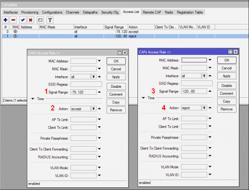В CAPsMAN заходим в закладку Access List и создаем два правила:
Команды в консоли
/caps-man access-list add action=accept disabled=no interface=all signal-range=-79..120 \ ssid-regexp="" add action=reject disabled=no interface=all signal-range=-120..-80 \ ssid-regexp=""
|
1 2 3 4 5 6 7 |
add action=accept disabled=no interface=all signal-range=-79..120 \ add action=reject disabled=no interface=all signal-range=-120..-80 \ |
Если в радиусе действия клиента будет другой CAP, он зарегистрируется на нём. В логах и Registration Table можно смотреть процесс переключения клиента.
На форумах встречал утверждение, что правила Access List’а проверяются только в момент подключения клиента к Wi-Fi сети и что если уровень сигнала клиента, изменится когда клиент уже подключен, то правила Access List’а не сработает.
Данное утверждение неверно, Access List постоянно контролирует клиента и если его уровень сигнала опустится ниже настроенного уровня, то клиент будет сразу отброшен Access List’ом.
В версии ROS 6.42 появилась опция allow-signal-out-of-range, она позволяет реализовать проверку уровня сигнала клиента только в момент подключения к Wi-Fi сети.
Опция Access-List’а: allow-signal-out-of-range
C версии ROS 6.42 в реализации Wi-Fi c CAPsMAN для Access List’ов появилась опция «allow-signal-out-of-range». Она пока ещё не описана в документации. Данная опция позволяет, настроить проверку уровня сигнала клиента с помощью Access List только в момент подключения клиента к Wi-Fi или указать время в течении которого Mikrotik будет игнорировать снижение уровня сигнала от клиента.
Например: Если данный параметр поставить 10s и у клиента кратковременно упадёт сигнал (например рукой антенну закрыл), то Mikrotik не отбросит его сразу, но если от клиента уровень сигнала будет низкий больше 10 секунд, то его отключат от AP.
Пример настройки
В данном случае, клиент отключится от Wi-Fi AP если его уровень сигнала в течении 10 секунд будет хуже -75 dBm.
Если установить «always», то проверяться уровень сигнала Wi-Fi клиента, будет только в момент подключения клиента к Wi-Fi AP, далее его изменения игнорируются.
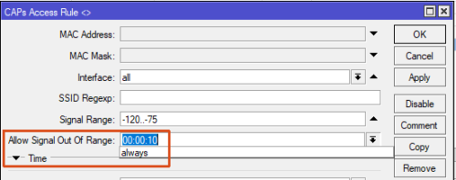
CAPsMAN Access-List с опцией allow-signal-out-of-range
Команды в консоли
/caps-man access-list ... add action=reject allow-signal-out-of-range=10s disabled=no interface=any signal-range=-120..-75 ssid-regexp=""
|
1 2 3 4 5 |
add action=reject allow-signal-out-of-range=10s disabled=no interface=any signal-range=-120..-75 ssid-regexp="" |
Тестирование роуминга (хендовера)
Имеется два CAP’а под управлением CAPsMAN (CAP5 и CAP6). В настройках Bridge выключен Local Forwarding. В Access List’е настроены минимальные уровни сигнала при которых клиент может работать с нашей Wi-Fi сетью.
Для тестирования были следующие уровни сигнала:
CAPsMAN access-list signal-range
/caps-man access-list add action=accept disabled=no interface=all signal-range=-74..120 ssid-regexp="" add action=reject disabled=no interface=all signal-range=-120..-75 ssid-regexp=""
|
1 2 3 4 5 |
add action=accept disabled=no interface=all signal-range=-74..120 ssid-regexp="" add action=reject disabled=no interface=all signal-range=-120..-75 ssid-regexp="" |
С помощью смартфона, я подключился к CAP5 и стал перемещаться к CAP6. На смартфоне запущен ping.
Как только на CAP5, уровень сигнала от смартфона опустился ниже указанного порога, я сразу переключился на CAP6.
Лог:
MikroTik CAPsMAN роуминг (лог)
20:04:30 caps,info 71:03:A8:3C:27:F1@cap5 connected 20:04:30 dhcp,info dhcp1 deassigned 10.10.10.11 from 71:03:A8:3C:27:F1 20:04:30 dhcp,info dhcp1 assigned 10.10.10.11 to 71:03:A8:3C:27:F1 20:04:50 caps,info 71:03:A8:3C:27:F1@cap5 disconnected, too weak signal 20:04:50 caps,info 71:03:A8:3C:27:F1@cap6 connected
В логе видно:
В этот момент на клиенте был потерян один ICMP пакет (ping)
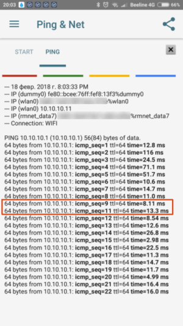
Mikrotik Wi-Fi роуминг
Описание протоколов Wi-Fi-роуминга
В статье, достаточно подробно описаны различные механизмы реализации роуминга их отличия друг от друга и особенности. Данное описание применительно не только для оборудования Cisco.
Комментарии на тему роуминга и Access-List’ов
Если у вас используются современные Wi-Fi клиенты, то вам скорей всего не понадобятся Access List’ы (с ограничением по уровню сигнала) и мало того, они вам могут навредить (клиенты будут постоянно то подключаться то отключаться от AP, когда от них падает уровень сигнала).
Access-List’ы нужны для принудительного отключения Wi-Fi клиента который «намертво» зацепился за Wi-Fi AP и висит на ней до последнего, пока уровень сигнала не упадёт до нуля. Современные Wi-Fi адаптеры в клиентских устройствах, обычно таким поведением не страдают и сами, без дополнительного «пинка», переключаются на соседнюю AP.
Для чего я бы рекомендовал использовать Access-List’ы
Когда развернёте Wi-Fi сеть, протестируйте как работают ваши Wi-Fi клиенты и тогда уже принимайте решение с какими настройками использовать Access-List’ы или не использовать их вообще.
Как клиентское устройство выбирает частотный диапазон к которому подключиться
Часто возникает вопрос: как при одном SSID для 2.4 и 5 ГГц клиентское устройство выбирает частоту к которой подключаться?
Выбор частоты является ответственностью клиентского устройства.
Я проводил эксперименты на разных устройствах и конфигурациях сети. Результаты были следующие:
Если уровень сигнала на 5 ГГц удовлетворяет требованиям клиента, то он всегда подключается к 5 ГГц, если уровень сигнала падает до неприемлемого уровня, то он переключится на 2.4 ГГц. Если уровень сигнала на 5 ГГц вернулся в норму, то клиент автоматически ¹ не переключится к нему с 2.4 ГГц, переключить можно только принудительно — отключить и обратно включить Wi-Fi на клиентском устройстве.
Если вы создадите два SSID — отдельно для 2.4 и 5 ГГц и зарегистрируете клиента в обоих SSID, то клиентское устройство будет работать абсолютно так же — всегда будет пытаться подключиться к 5 ГГц и, если нет… тогда уже к 2.4 ГГц.
1 — Я уже сомневаюсь в правильности моих утверждений на тему — «Если уровень сигнала на 5 ГГц вернулся в норму, то клиент автоматические не переключится к нему с 2.4 ГГц».
Автоматически переключиться может на 5 ГГц, но не на всех клиентских устройствах. Всё зависит от реализации Wi-Fi на конкретном клиентском устройстве.
Провёл эксперимент, который опроверг категоричность моего утверждения. Суть эксперимента в в следующем:
В Wi-Fi сети, под управлением CAPsMAN есть два разных SSID для 2.4 и 5 ГГц. Когда я перезагрузил CAPsMAN, то радиомодуль на 2.4 ГГц (cap1) поднялся сразу и к нему подключился ноутбук, а вот модуль на 5 ГГц (cap2) выполнял процедуру Radar Detection и поднялся позже.
В этот момент, ноутбук увидел SSID с 5 ГГц и автоматически переключился с 2.4 GHz (cap1) на 5 GHz (cap2).
Лог:
Автоматическое переключение клиента с 2.4 на 5 ГГц
21:16:31 caps,info 28:AF:5E:3D:BA:BF@cap1 connected 21:16:56 caps,debug cap2: radar not detected on channel 5260/20-Ce/an/DP(20dBm) 21:17:24 caps,info 28:AF:5E:3D:BA:BF@cap1 disconnected, received disassoc: sending station leaving (8) 21:17:25 caps,info 28:AF:5E:3D:BA:BF@cap2 connected
Так что, не всё так однозначно в этом вопросе…
Многое, а если точнее — почти всё, зависит от реализации Wi-Fi на клиентском устройстве и в этом одна из самых больших проблем Wi-Fi. Не может Wi-Fi точка доступа или контроллер управлять клиентским устройством, клиент сам решает как ему работать, какие частоты выбирать, как производить процедуру роуминга и т.д.
Презентации с MUM на тему CAPsMAN
Ссылки на описание работы роуминга у разных производителей